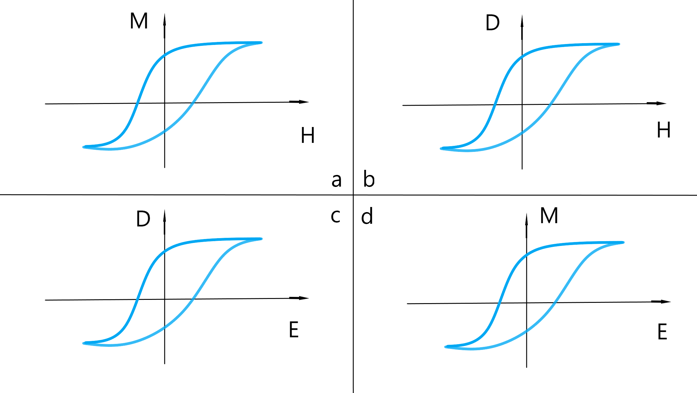

多铁材料的研究背景
铁性质，最早来源于对铁磁性的研究，后来有些电介质被发现存在与铁磁性的显著特征相似的性质，于是这种类似于铁磁性的性质被命名为铁电性，拥有这些性质的材料也被称为铁电材料，尽管有些材料与铁元素没有任何关系。多铁材料是指在一个单一的相之中存在两个及以上的铁性质，例如铁磁、铁电铁、弹性、铁环性。目前通常指代将磁性行为与铁电相结合的电磁材料。多铁材料内部同时存在的铁磁性与铁电性或许可以将电场与磁场进行耦合是研究多铁材料的一个重要原因。自从麦克斯韦方程组建立以来，人们早已认识到电磁并不是孤立存在的两种事物，联系是客观的普遍存在的，而是有联系的并可以进行相互转化。安培环路定理、位移电流、法拉第电磁感应定律表明，变化的电场产生变化的磁场、变化的磁场会激发变化的电场。然而，在铁电和铁磁两个领域，电与磁的界限依然十分明显，几乎没有同时具有强铁电性与强铁磁性的材料。

铁磁性、铁电性、多铁性示意图 (a)(c)是传统的铁磁性与铁电性，外加磁场可以使铁磁性物质出现磁矩，外加电场会使铁电性物质出现电极化。在外场撤出之后，受外场影响所产生的磁矩与电极化并不会消失。(b)(d)是多铁性材料铁电与铁磁性质的耦合，通过外加电场可以使诱导出宏观磁矩，外加磁场可以产生出电极化。